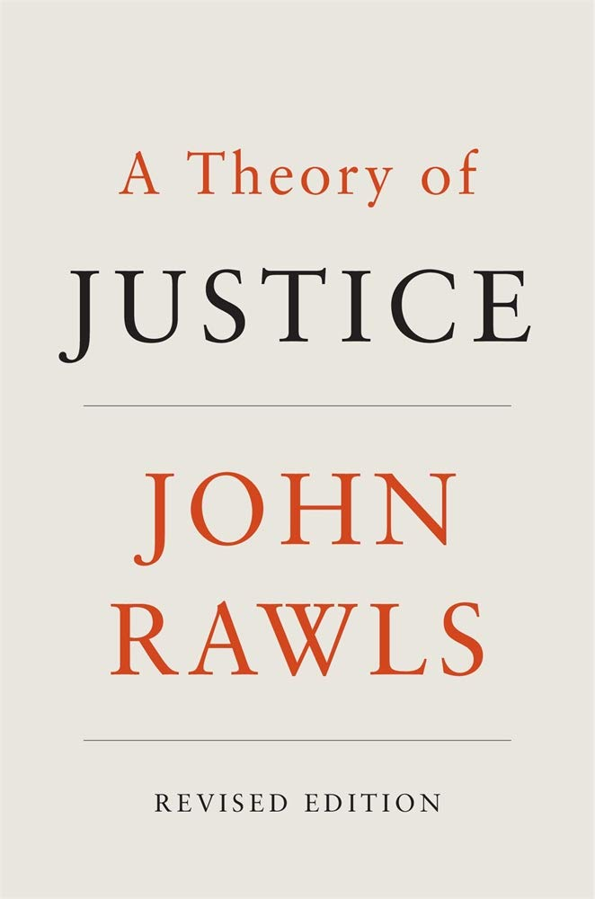

Intellectual Freedom and John Rawls' Theory of Justice
Sam Popowich
University of Birmingham
@redlibrarian
December 2020
Outline
- 2019/2020 "Gender Critical Feminism" Room Rentals
- Vickery Bowles "Free Speech" Statement
- Free Speech, Freedom of Expression, Intellectual Freedom
- "Reasonable Limits"
- Rawls' Two Principles of Justice
- Further research
2019/2020 "Gender Critical Feminism" Room Rentals
- Vancouver Public Library (January 2019; March 2020)
- Toronto Public Library (October 2019)
- Seattle Public Library (February 2020)
Consequences
- Vancouver Public Library banned from Vancouver Pride.
- Vancouver changed their room rental policy to strengthen "intellectual freedom" (Toronto Public Library did the opposite after the Kulaszka Memorial).
- Protests at Vancouver, Toronto, Seattle.
- Seattle public given Library Journal's LotY award; Movers and Shakers return their awards.
Vickery Bowles' Free Speech Statement

Source: City Librarian Statement on Upcoming Third-Party Room Rental Event
Free Speech, Freedom of Expression, Intellectual Freedom
Canadian Charter of Rights and Freedoms, §2b: "Everyone has the following fundamental freedoms: freedom of thought, belief, opinion, and expression, including freedom of the press and other media of communication;"
***
US Constitution, Amendment 1: "Congress shall make no law respecting an establishment of religion, or prohibiting the free exercise thereof; or abridging the freedom of speech, or of the press; or the right of the people peaceably to assemble, and to petition the Government for a redress of grievances."
UN Declaration of Human Rights, Art. 19: "Everyone has the right to freedom of opinion and expression; this right includes freedom to hold opinions without interference and to seek, receive and impart information and ideas through any media and regardless of frontiers."
***
CFLA Statement on
Intellectual Freedom and Libraries: "The Canadian Federation
of Library Associations recognizes and values the Canadian
Charter of Rights and Freedoms as the guarantor of the
fundamental freedoms in Canada of conscience and religion;
of thought, belief, opinion, and expression; of peaceful
assembly; and of association.
The Canadian Federation of Library Associations supports and promotes
the universal principles of intellectual freedom as defined in the
Universal Declaration of Human Rights, which include the interlocking
freedoms to hold opinions and to seek, receive and impart information
and ideas through any media and regardless of frontiers."
"Reasonable Limits"
Canadian Charter of Rights and Freedoms, §1: "The Canadian Charter of Rights and Freedoms guarantees the rights and freedoms set out in it subject only to such reasonable limits prescribed by law as can be demonstrably justified in a free and democratic society."
- No such limits in the UN Declaration
- No such limits in the First Amendment
Questions
- Why did Vickery Bowles use "free speech" when the Canadian term is "free expression" and the library term is "intellectual freedom"?
- What is the effect of the "reasonable limits" prescribed in the Canadian Charter of Rights?
Rawls' Two Principles of Justice

- Principle of equality: universal distribution of equal rights.
- Difference principle: A departure from strict equality is only justified if a) inequalities are attached to positions open to all and b) the conditions of the worst off are improved.
Canadian Charter allows for the application of the difference principle. The CFLA intellectual freedom statement inherits the difference principle from the Charter (but not from the UN Declaration). If Vickery Bowles wanted an *absolutist* stance on intellectual freedom, she needed a constitutional context which did *not* provide for the difference principle: the First Amendment. Hence the adoption of "free speech".
The CFLA Statement on Intellectual Freedom inherits the principle of difference from one source, but not from the other. This inherits an ambiguity into the CFLA statement which likely makes it amenable to any position. Not great for a policy document. Again, this is why Vickery Bowles couldn't rely on it.
Liberalism, in both its Canadian and American variants, comes from the same sources as John Rawls' theory of justice. As a result an ambiguity - over the primacy of one or other of the principles of justice - is baked into the Charter of Rights and Freedom and the Bill of Rights. This makes both documents subject to opportunistic interpretations. (Hence institutions like the Supreme Court).